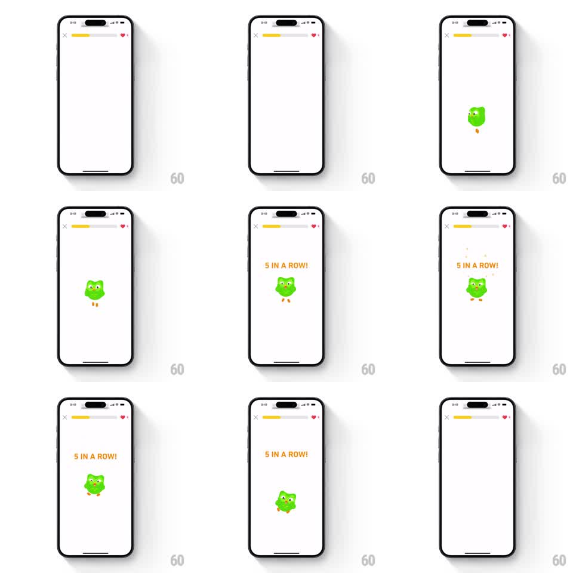

Media
Frame-by-frame

Rebuild this animation 1:1: Duolingo's "5 in a row" streak celebration - Duo drops into the center of the lesson screen, bounces under an orange "5 IN A ROW!" headline with sparkles, then slides down off-screen, handing the screen back to the lesson.

Rebuild this animation 1:1: Duolingo's "5 in a row" streak celebration - Duo drops into the center of the lesson screen, bounces under an orange "5 IN A ROW!" headline with sparkles, then slides down off-screen, handing the screen back to the lesson. ## Integration Integration: stack-agnostic spec - springs given as stiffness/damping, timed motions as duration + curve; map every value to your framework and animation library of choice. ## Scene Lesson screen skeleton: top bar with X, yellow progress bar, heart counter, otherwise empty white canvas. Duo (green owl) appears at center. Orange headline "5 IN A ROW!" above him. Small 4-point star sparkles around the pair. ## Motion spec Pattern: mascot drop-in celebration with exit slide. - Duo drops in from above center (translateY -60px to 0) with a squash-and-stretch landing: spring stiffness ~280, damping ~16, two visible bounces over ~600ms. - The headline fades in above him (opacity 0 to 1, translateY 8px to 0, 200ms) as he lands. - Sparkles pop in staggered around Duo: scale 0 to 1, 150ms each, ~80ms apart. - Duo does one celebratory hop (translateY -24px and back, ~350ms, spring) while the headline holds. - Exit: the whole group slides down off-screen (translateY 0 to +120% of screen height, 400ms, ease-in), leaving the empty lesson screen. ## Calibration - The landing squash is the charm beat - two bounces minimum, never a single stiff stop. - Total on-screen time is about 2 seconds; the exit is part of the animation, not a cut. ## Reduced motion Duo and headline fade in, hold, and fade out over 200ms each; no bounce, no slide. ## Don't miss - The screen behind the celebration stays the real lesson screen (progress bar visible) - this is an overlay moment, not a route change. - The exit goes downward; do not fade out early.